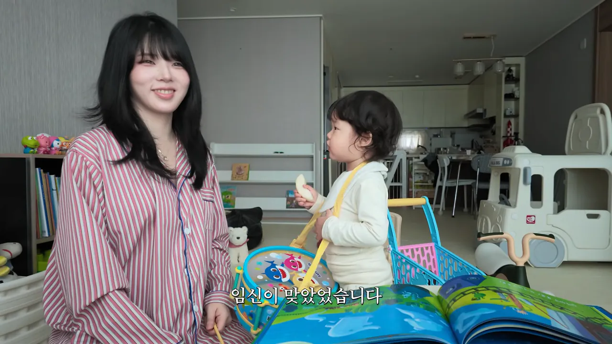

70 · 8 · 8 시간 전 · 원문

진짜 둘째 임신함
수집 당시 댓글 8개
↳ 답글 · 황두남 · 4 시간 전
여동 생 아니고 언니https://www.youtube.com/@dannanojun
밑장빼기 · 6 시간 전
빨간색 두줄이면딸 쌍둥이야?
Fxxk · 6 시간 전
1월 출산앞두거있는데 바로 묶어야지!!
BTS그래미수상 · 5 시간 전
원종이들아 일본 여자 바이럴 그만 해라 ㅉㅉ
맛있는고구마 · 5 시간 전
진짜 대단해임신+출산을 직접 경험했는데도 둘째를 가지고 싶어한다는게도대체 어느정도의 행복감이길래
↳ 답글 · 비나비 · 4 시간 전
딸이 진짜 졸라 귀여움
김땅 · 2 시간 전
임신을해?
동정꼬꼬마 · 1 시간 전
개부럽네
여동 생 아니고 언니
https://www.youtube.com/@dannanojun